Один менеджер вместо шести: как ИИ-система продаёт бани на 700К+ и дожимает базу почти без людей
Далее — скрины реальных переписок с клиентами: от первого касания до оплаты 703 000₽. Покажу, как ИИ закрыл сделку в 21:22, когда живой менеджер был недоступен.
Все продажи у нас идут через WhatsApp — подключённый к amoCRM через Wazzup, чтобы каждый диалог фиксировался автоматически.
Я запускал эту систему поэтапно и документировал каждый шаг. Здесь — срез по состоянию на май 2025: что уже работает, как ИИ взаимодействует с живым менеджером, какие были ошибки и как мы их решили.
Для клиента всё выглядит как обычная переписка с менеджером в WhatsApp. Разница только в том, что с ним общается ИИ. Когда подключается живой человек, то переход незаметен: тот же чат, общение просто продолжается.
Оперативная отработка заявки → заказ
Входящий лид в 21:22. ИИ-продавец сразу отправляет приветствие — одинаковое для всех.
Клиент ответил — ИИ присылает прайс и файлы.
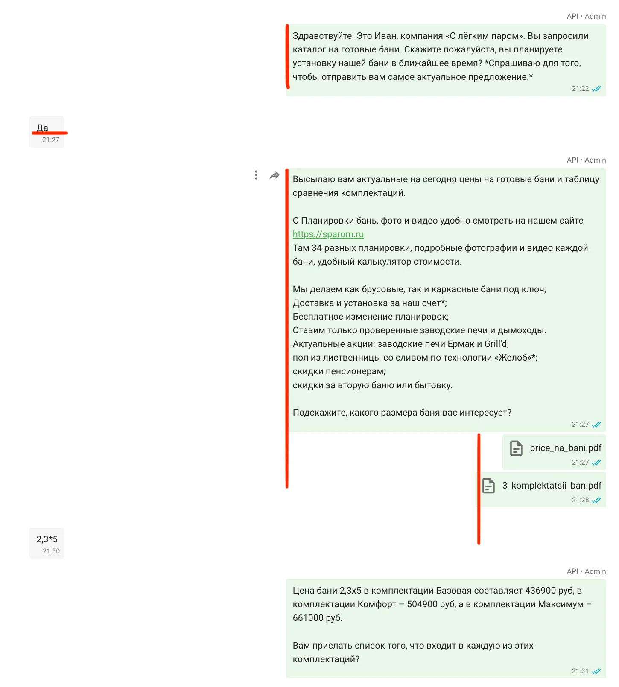
Далее продавец максимально точно и быстро отвечает на все возникающие вопросы заказчика. Обратите внимание на подпись API Admin – это означает, что работает ИИ-продавец.
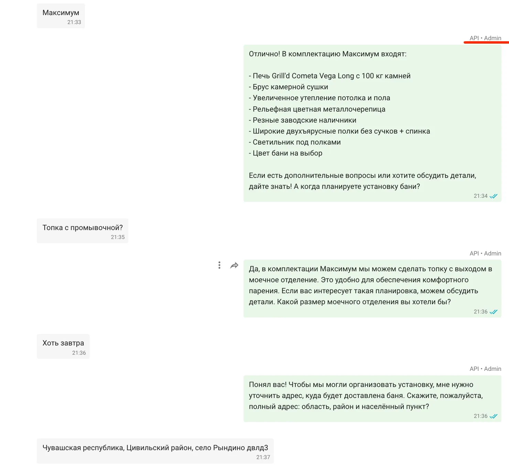
Когда заказчик написал адрес доставки – ИИ позвал живого менеджера и прислал ему уведомление в Телеграм. Менеджер подключился, посчитал доставку, запросил документы у заказчика. И уже в 22:15 прислал готовый пакет документов. Обратите внимание на подпись amoCRM Иван – это означает, что отвечает живой менеджер. На следующий день утром заказчик оплатил строительство бани.
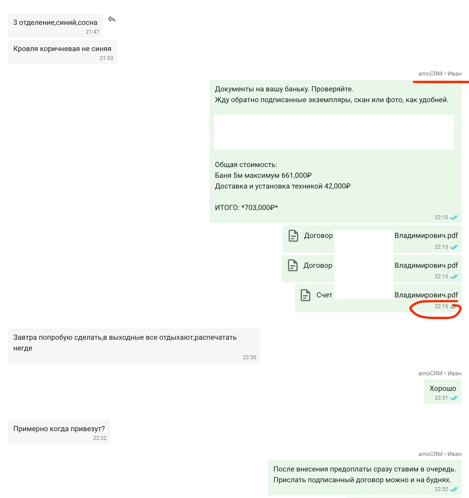
Результат
Заявка в 21:22 → договор в 22:15 → оплата на следующее утро.
Сумма сделки: 703 000₽.
Без ИИ-системы эта заявка просто бы потерялась — ни один менеджер не работает в десять вечера.
Реактивация базы: 300–600 персональных сообщений в день
WhatsApp банит за массовые одинаковые сообщения — первый раз номер восстанавливают, второй уже 50/50, третий — потеря навсегда.
Поэтому наш ИИ генерирует каждое сообщение индивидуально: учитывает всю историю переписки с конкретным клиентом, подбирает формулировки и отправляет в случайное время. Каждый человек получает уникальный текст, а не шаблон. Так мы рассылали по 300–600 сообщений в день без единого бана.
На скрине — первый контакт: ИИ вытянул из прошлогодней переписки бюджет клиента (до 400 тыс) и интерес к подготовке площадки. Клиент сразу включился в диалог. Внимательный читатель заметит, что во втором сообщении перечислены несколько цен подряд и это может выдать робота. Исправить несложно, но наша аудитория — это дачники 40+ и за всё время ни разу не заподозрила ИИ. Поэтому пока оставили как есть.
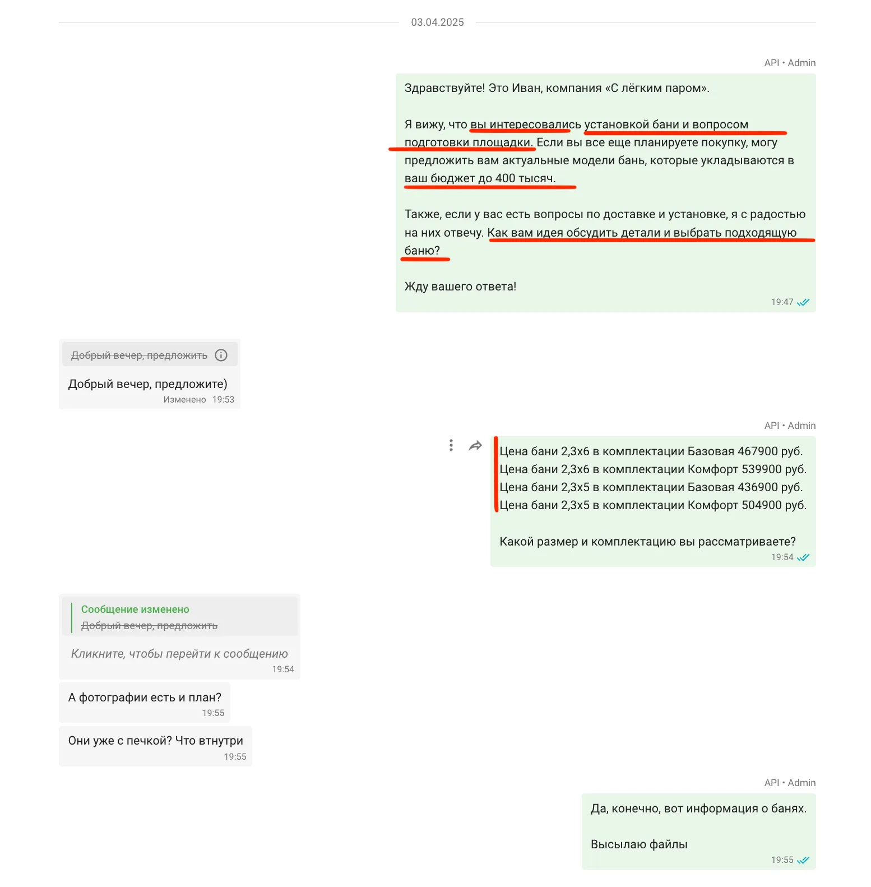
В этой переписке ИИ-продавец учел пожелания заказчика про предоплату в марте и установку бани летом. Также разбил свои сообщения на несколько – это также его фишка.
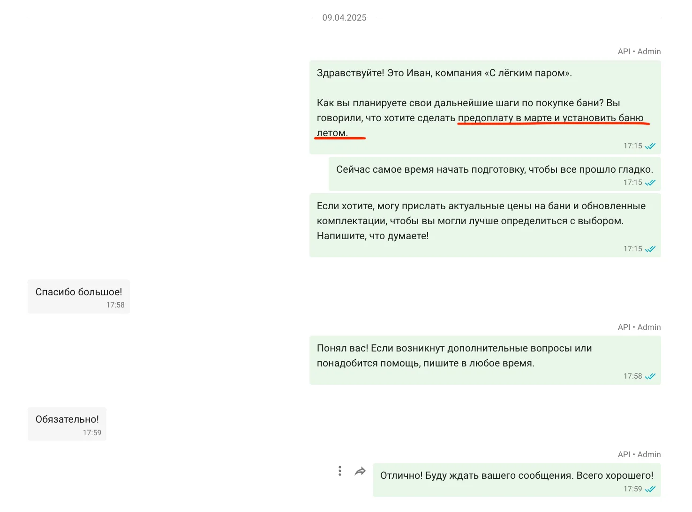
Заказчица вернулась сама и засыпала вопросами. Один из них — «Это будет для нас и баня, и чтоб можно было ночевать!!!???)))» — ИИ не потянул и позвал живого менеджера.
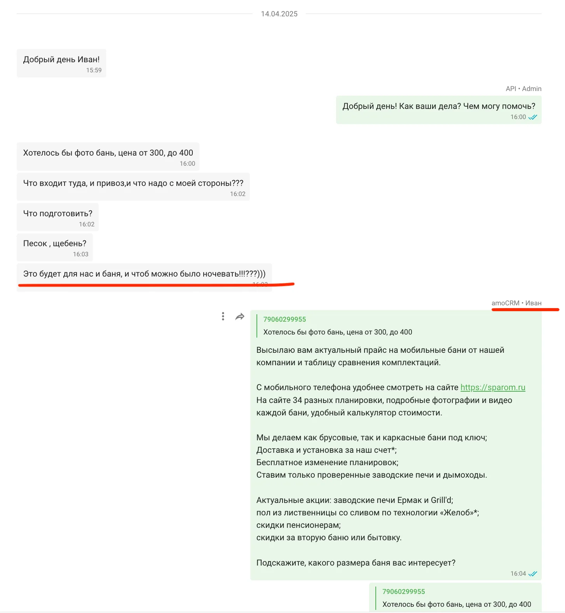
В следующей переписке ИИ-продавец учел, что варианты не подошли. Написал несколько предложений, задал вопрос. Клиент уточнил про рассрочку – и получил понятный ответ.
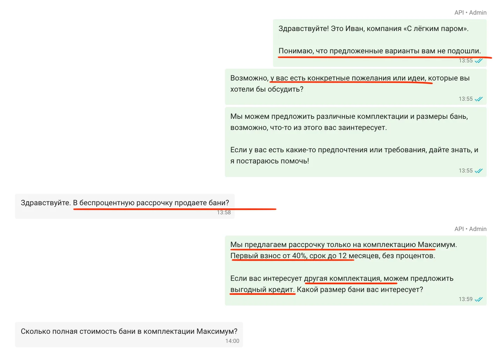
А здесь ИИ-продавец решил зайти со спецпредложения и бонусов. Получилось.
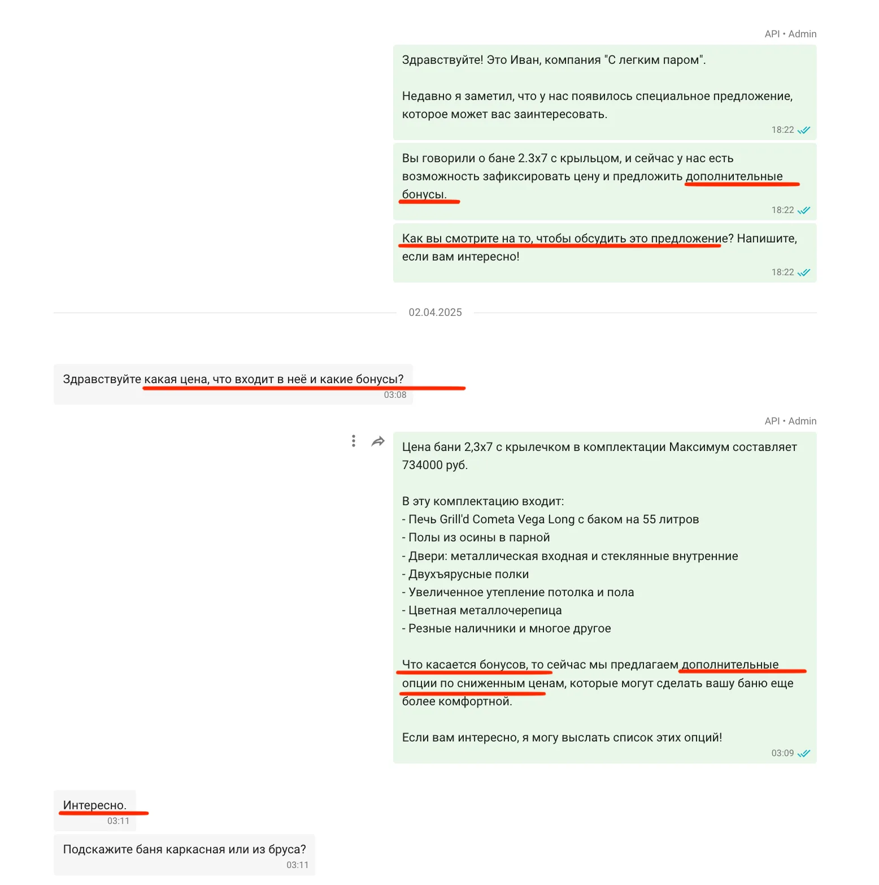
Далее он корректно отвечает на все возникающие вопросы.
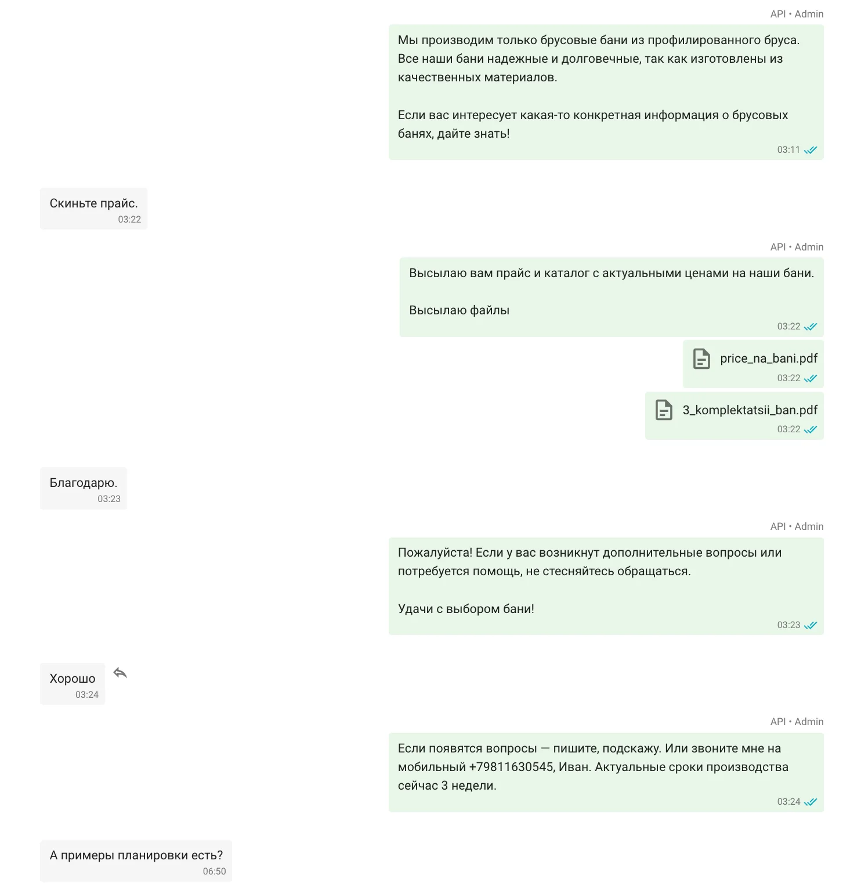
Что еще закрывает ИИ-продавец
- отвечает на любые вопросы, которые есть в его базе 24/7
- знает все актуальные цены и акции
- умеет присылать файлы и фото, видео по запросу клиента
- распознает голосовые сообщения от клиентов любой длины и спокойно на них отвечает текстом
- автоматически зовёт живого менеджера, если не знает ответ
- работает как внутренний помощник для отдела продаж — менеджеры спрашивают его сами через Telegram-бот, не копаясь в базе или на сайте
- игнор-лист: можно исключить контакты, которым не нужно писать — и вернуть обратно
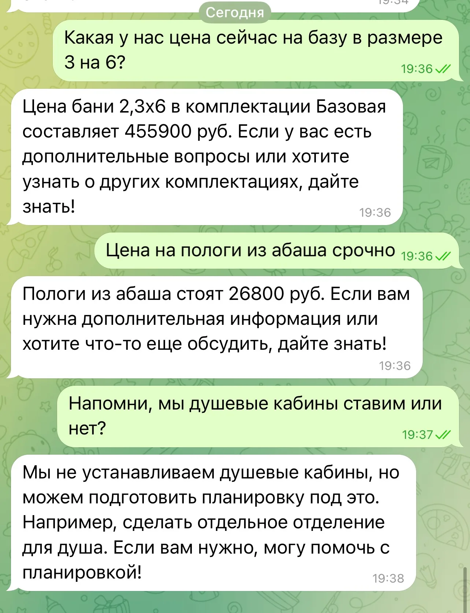
Почему это не чат-бот и не конструктор
- Это не GPT в оболочке. Он знает ваши актуальные цены, акции, условия.
- Он понимает любые голосовые клиента, отправляет файлы, фото, видео.
- Он не ломается, если клиент пишет в три сообщения.
- Он не отвечает «извините, я не понимаю», а зовёт менеджера.
- Он может вести рассылку без риска блокировки.
- Уже умеет возвращать клиентов из прошлых переписок. Настраиваем полноценный дожим.
- Это кастомная разработка — не коробочный конструктор с ограниченными сценариями. Можно подключить к любому каналу (WhatsApp, Telegram, Messenger, Facebook, Instagram) и обучить под задачи конкретного бизнеса: автозаполнение CRM, выставление счетов, отчёты руководителю, аналитика переписок менеджеров.
Под капотом — собственная архитектура: база знаний, своя логика маршрутизации и адаптация под конкретный бизнес.
Система стабильно тянет сотни параллельных диалогов и масштабируется без переписывания кода.
Никакого no-code — только кастомная разработка.
Стек технологий: python, docker, redis, aiogram, fastapi, supervisord, openai, google-client, mysql
Может ли ИИ-продавец отвечать на сложные вопросы?
На скрине во втором сообщении ИИ отправляет шаблонное сообщение, внутри этого сообщения содержится знак *.
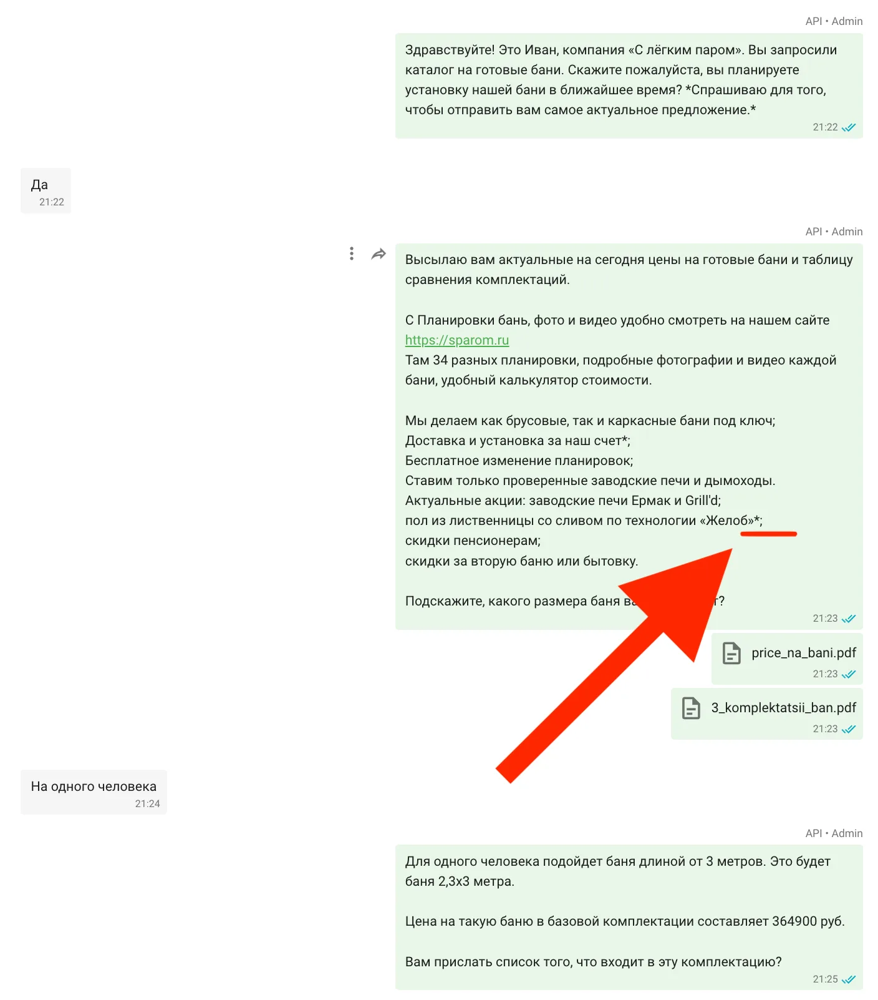
И заказчик через некоторое время задает этот вопрос. ИИ-продавец, немного подумав, отвечает без проблем.
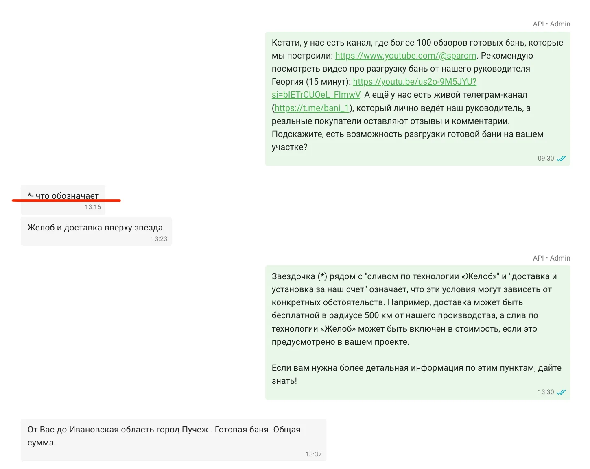
Казусы
Конечно, пока мы его обучали, то сталкивались с разными ситуациями.
Например, здесь ИИ утверждал, что на дворе декабрь 😂
Вовремя подхватил живой менеджер Иван и отправил актуальные предложения.
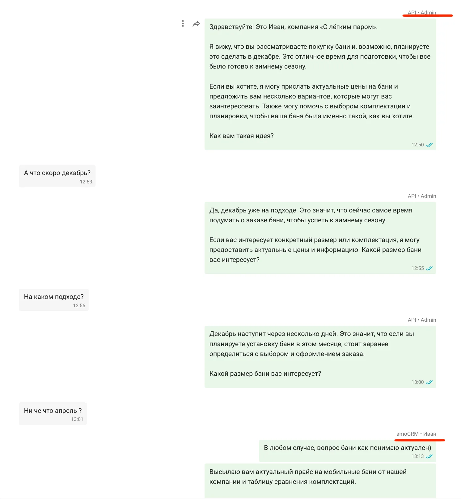
ИИ-продавец – это живая технология. И нужно постоянно держать руку на пульсе. При этом это решение способно обрабатывать хоть сто диалогов одновременно — хоть ночью.
Выводы
Не буду приписывать ИИ-системе весь рост — на продажи влияет сезон, реклама, продукт. Подробный покадровый разбор одной такой сделки на 416 900₽ — в отдельном кейсе. Но вот что изменилось объективно:
- Отдел продаж сократился с 6 до 1 человека — и справляется. Экономия на ФОТ — в разы. Это прямая прибыль.
- 300–600 персональных сообщений в день — без ИИ для этого нужна отдельная команда. Каждый вернувшийся клиент — заслуга системы.
- Ответ за минуту, круглосуточно. В нишах, где решает скорость, это закрывается на 100%.
- ИИ помнит каждого клиента — и первым пишет тем, кто интересовался раньше. Заказчики, которые «ушли подумать», получают персональное сообщение и снова выходят на контакт.
- Система не болеет, не берёт отпуск, не выгорает — и работает даже после полуночи, когда живой продавец уже с женой сериал смотрит. А с каждой неделей становится только точнее.
Всё, что описано в статье, работает в моём бизнесе прямо сейчас. Я сам разработал эту систему, сам внедрил, сам получил результат. Система уже работает в строительстве. Адаптирую под любую нишу, где продажи идут через мессенджеры.
Хотите так же?
Нужна подобная система под ваш бизнес — напишите, обсудим задачу.
Написать в TelegramТакже веду Telegram-канал, где рассказываю о своих проектах в сфере AI:
Telegram-канал